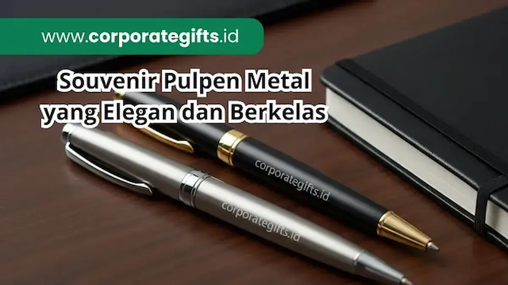

Corporate Gifts ID - Souvenir pulpen metal adalah corporate gift premium yang memadukan fungsi alat tulis dengan citra profesional perusahaan. Dibuat dari bahan logam berkualitas dan dapat dipersonalisasi dengan logo melalui teknik engraving, pulpen metal menjadi souvenir kantor eksklusif yang meningkatkan brand recall sekaligus mempererat hubungan bisnis dengan klien, mitra kerja, dan karyawan.
Poin Kunci Keunggulan Pulpen Metal:
- Citra Elegan: Material logam padat menciptakan bobot ergonomis dan impresi eksekutif saat digunakan di meja kerja.
- Ketahanan Permanen: Teknik grafir laser memastikan logo instansi melekat seumur hidup tanpa luntur atau terkelupas.
- Nilai Prestise: Cocok untuk bingkisan VIP, sertijab manajerial, penandatanganan kontrak kerja sama, maupun kelengkapan agenda tahunan.
Bukan hanya sekadar media menulis, pulpen metal custom logo mampu meninggalkan kesan mendalam bagi penerima, baik itu klien, mitra kerja, maupun karyawan. Inilah mengapa souvenir pulpen semakin populer digunakan dalam berbagai kegiatan branding korporat, seminar formal, maupun pengadaan hadiah tahunan.
Kenapa Pulpen Metal Cocok Sebagai Souvenir Kantor Premium?
Pulpen merupakan alat tulis yang fungsional, tetapi dengan material logam, pulpen naik kelas menjadi souvenir kantor mewah dan berkelas. Dibandingkan pulpen plastik biasa, pulpen metal memiliki tiga keunggulan utama sebagai berikut:
1. Kesan Elegan dan Berkelas
Pulpen logam dengan sentuhan finishing chrome, matte, atau gold memberikan kesan profesional seketika. Souvenir kantor eksklusif seperti ini kerap dipilih korporasi besar dan perbankan untuk menjaga citra prestisius di mata rekanan bisnis.
2. Daya Tahan dan Personalisasi Presisi
Pulpen metal custom logo dapat diukir dengan teknik engraving presisi tinggi melalui fasilitas laser engraving pulpen metal sehingga terlihat rapi dan tidak mudah pudar. Selain tahan banting, pulpen ini menjadi instrumen branding yang selalu dibawa di saku pakaian penerima.
3. Simbol Apresiasi Kemitraan
Memberikan souvenir pulpen eksklusif kepada mitra kerja atau jajaran karyawan berprestasi merupakan simbol penghargaan yang nyata. Sejumlah perusahaan multinasional bahkan memilih Montblanc engraved pen atau Parker custom logo kepada mitra VIP sebagai bentuk penghargaan istimewa.
Rekomendasi Merek Pulpen Metal Premium
Jika perusahaan Anda ingin memilih souvenir kantor branded dengan reputasi internasional, beberapa merek pulpen legendaris berikut dikenal berkat presisi rekayasa mekanis dan materialnya yang superior:
- Parker: Pulpen klasik elegan dengan sistem mekanisme twist atau klik yang kokoh, sangat cocok untuk level eksekutif perusahaan.
- Montblanc: Identik dengan prestise tertinggi, kerap menjadi simbol status sosial dan cinderamata serah terima jabatan dewan direksi.
- Cross: Desain ramping berkarakter stylish yang sering diandalkan untuk corporate gift set eksekutif.
- Zebra Metal Series: Pilihan rasional dengan konstruksi bodi stainless steel solid dan harga bersahabat untuk pengadaan berskala moderat.
- Waterman: Terkenal dengan keanggunan gaya Eropa dan kelancaran aliran tinta liquid ink yang sangat halus saat menulis.
- Pilot & Lamy: Alternatif modern dengan desain ergonomis minimalis bagi perusahaan teknologi dan agensi kreatif.
Pilihan Pulpen Metal untuk Promosi dan Hadiah Kantor
Selain merek multinasional, tersedia pula varian pulpen metal custom yang sangat fleksibel untuk kebutuhan merchandise promosi, seminar kit eksekutif, maupun hadiah apresiasi internal:
- Pulpen Promosi Metal Ballpoint F1 RB: Mengusung desain sederhana berbalut warna korporat cerah dengan rasio efisiensi biaya pengadaan yang sangat baik.
- Pulpen Metal Model Montblanc 164: Desain terinspirasi siluet mewah klasik beraksen cincin emas, sangat memikat untuk paket gift box premium.
- Pulpen Metal Eksklusif BP A8: Menjadi standar favorit dalam paket seminar kit eksklusif dan perhelatan simposium tahunan.
- Pulpen Metal Model Sonet Parker: Siluet formal bertekstur halus, ideal untuk cinderamata penandatanganan MoU korporasi.
- Custom Pulpen Metal Kotak Beludru: Dilengkapi wadah tin box atau box magnetik beludru dengan opsi grafir nama individual penerima secara personal.

Pilihan pulpen metal custom logo dengan box kemasan eksklusif siap memperkuat reputasi branding instansi.
Tabel Spesifikasi & Karakteristik Pulpen Metal
Untuk memudahkan penyesuaian antara anggaran pengadaan (RAB) dan profil penerima cinderamata, berikut tabel perbandingan karakteristik pulpen metal souvenir:
| Tipe / Kategori Pulpen | Material Utama | Metode Personalisasi | Rekomendasi Penggunaan |
|---|---|---|---|
| Branded Global (Parker / Montblanc) | Brass / Stainless Mulia | Laser Engraving Mikro Presisi | Hadiah Direksi, Sertijab VIP, Kemitraan Strategis |
| Executive Ballpoint BP A8 | Aluminium Alloy Solid | Laser Grafir Logam Putih/Gold | Seminar Kit Manajerial & Konferensi B2B |
| Formal Stylus Rollerball | Metal Bodi Dual Function | Laser Grafir / Pad Printing Logo | Event Teknologi, Karyawan Modern, Workstation Gift |
| Promotional Metal Ballpoint F1 | Lightweight Metal Alloy | Sablon Logo Korporat / Grafir | Merchandise Pameran Bisnis, Gathering Massal |
Desain Unik Pulpen Metal yang Bisa Jadi Souvenir Spesial
Bagi institusi kreatif atau penyelenggara event yang menghendaki nuansa unik dan tidak monoton, beberapa eksplorasi desain tematik berikut dapat dipertimbangkan:
- Metal Gold Dragon Relievo: Berkarakter artistik dengan ukiran relief tematik, memberi kesan mewah bernuansa oriental atau perayaan kultural resmi.
- Pen Metal Paku Kontemporer: Bentuk edgy modern dengan klip ramping, menghadirkan nuansa dinamis bagi industri arsitektur dan agensi desain.
- Metal Fountain Pen Red Wood Style: Perpaduan tekstur kayu alami dan logam kuningan yang menghadirkan aura vintage serta wibawa intelektual tinggi.
Cara Merawat Pulpen Metal Agar Tetap Eksklusif
Agar souvenir pulpen berbahan logam tetap berkilau, bebas korosi, dan dapat digunakan hingga bertahun-tahun, terapkan tips perawatan sederhana berikut:
- Bersihkan sisa noda tinta di ujung nib dengan kain lembut (mikrofiber) segera setelah digunakan.
- Gunakan cairan pembersih khusus logam non-abrasif secara periodik agar kilau pelapis chrome tetap terjaga cemerlang.
- Simpan pulpen di dalam pouch kulit atau box pelindung saat tidak digunakan untuk mencegah goresan kunci atau benda tajam lainnya.
- Ganti isi ulang (refill cartridge) dengan tinta berkualitas sesuai ukuran standar seperti Parker style atau G2 refill guna menghindari kebocoran internal.
Pulpen metal yang dirawat dengan benar terbukti dapat bertahan antara 5 hingga 10 tahun, bahkan menjadi kenang-kenangan bernilai sejarah bagi penerimanya.
Kesimpulan
Pulpen metal bukan sekadar alat tulis biasa, melainkan instrumen souvenir kantor premium yang membawa nilai simbolis, fungsionalitas tinggi, dan efektivitas branding jangka panjang. Mulai dari merek internasional berkelas seperti Parker dan Montblanc hingga seri custom ballpoint engraved, semuanya menawarkan keunggulan tak tergantikan untuk membangun citra profesional perusahaan Anda.
Pertanyaan Seputar Souvenir Pulpen Metal (FAQ)

Ditulis oleh: Arinda Zakia
Senior Corporate Gifting SpecialistPraktisi kurasi gift set korporat dan merchandise promosi profesional. Berpengalaman lebih dari 7 tahun mendampingi berbagai instansi BUMN dan swasta nasional dalam menyusun konsep cinderamata bernilai branding tinggi.
Lihat Profil Lengkap & Panduan Lainnya